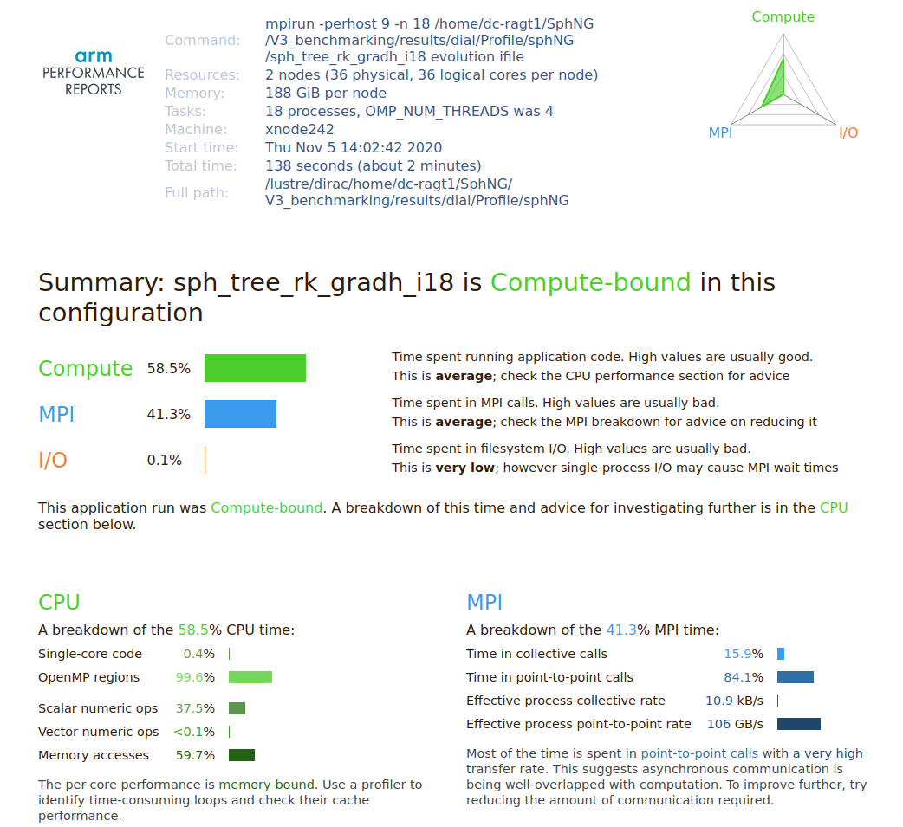

Arm Performance Reports
ARM Performance Reports is a low overhead tool that provides a high-level overview of your application’s performance including computation, communication, and I/O. This tool provides a one-page text or HTML summary about the application's performance.
To use this tool, all you need to do is prefix your execution command with perf-report. Please be advised that you do not need to recompile your code with any additional flags for generating a performance report. Instead, use the flags which you believe gives the best performance for your code.
You can use the following command for this purpose.
#For a single core Job.
$ perf-report <executable>
#For a MPI job.
$ perf-report mpirun -n 4 <executable>
You can also submit a job to scheduler to automatically generate the performance report for you. You can use the following example script (for an Hybrid MPI + OpenMP job) to generate the performance report for your code.
#!/bin/bash --login
#SBATCH -J Your_Job_Name
#SBATCH -o Your_Object_File_Name.o%j
#SBATCH -e Your_Error_File_Name.e%j
#SBATCH -p Partition_on_which_to_run_code
##SBATCH -A Account
#SBATCH --nodes=8
#SBATCH --ntasks=16
#SBATCH --ntasks-per-node=2
#SBATCH --exclusive
#SBATCH -t HH:MM:SS
export nodecnt=$SLURM_JOB_NUM_NODES
export corecnt=`expr ${SLURM_CPUS_ON_NODE} \* ${nodecnt}`
export mpicnt=$SLURM_NTASKS
export threadspermpi=`expr ${SLURM_CPUS_ON_NODE} \/ ${SLURM_NTASKS_PER_NODE}`
export threadcnt=`expr ${mpicnt} \* ${threadspermpi}`
export OMP_NUM_THREADS=$threadspermpi
export OMP_PLACES=cores
if [ $threadcnt -ne $corecnt ]
then
echo "Error, mismatch between requested and available hardware!"
exit -1
fi
#Dial3
module purge
module load intel-parallel-studio/cluster.2019.5
module load arm/forge/21.0.2
#This will prevent Arm forge from closing if it cannot find license within a specified limit.
export ALLINEA_NO_TIMEOUT=1
export EXE_DIR=Your_executable_directory_path
perf-report --processes=$SLURM_NTASKS --procs-per-node $SLURM_NTASKS_PER_NODE --mpi=intel-mpi $EXE_DIR/Your_executable
This will generate a .html file and .txt file which will show the various details about your code such as total run time, time consumed in MPI, whether code is compute bound or I/O bound etc. You can open the .html file in any browser. A sample image of performance report is shown below for your reference.
